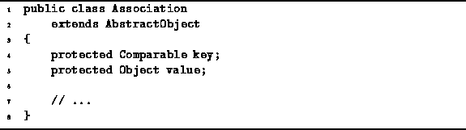
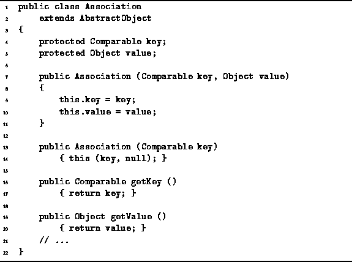
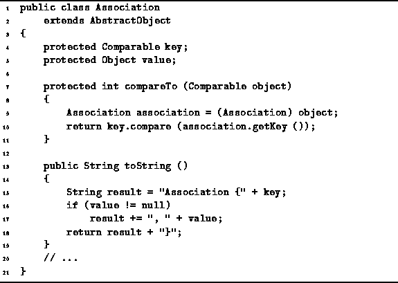

Data Structures and Algorithms
with Object-Oriented Design Patterns in Java
Data Structures and Algorithms
with Object-Oriented Design Patterns in JavaAn association is an ordered pair of objects. The first element of the pair is called the key ; the second element is the value associated with the given key.
Associations are useful for storing information in a database for later retrieval. For example, a database can be viewed as a container that holds key-and-value pairs. The information associated with a given key is retrieved from the database by searching the database for an the ordered pair in which the key matches the given key.
Program  introduces the Association class.
The Association class concrete extension
of the AbstractObject class given in Program .
introduces the Association class.
The Association class concrete extension
of the AbstractObject class given in Program .

Program: Association fields.
An association has two fields, key and value.
The key field is any object that implements the Comparable
interface defined in Program .
The value field is any, arbitrary object.
Two constructors and two accessors are defined in Program .
The first constructor takes two arguments
and initializes the key and value fields accordingly.
The second constructor takes only one argument which is used to initialize
the key field--the value field is set to null.

Program: Association constructors.
The getKey and getValue methods are accessors. The former returns the value of the key field; the latter, returns the value of the value field.
The remaining methods of the Association class
are defined in Program .
The compareTo method is used to compare associations.
Its argument is an object that is assumed
to be an instance of the Association class.
The compareTo method is one place where
an association distinguishes between the key and the value.
In this case, the result of the comparison is based solely
on the keys of the two associations--the values have no role in the comparison.

Program: Association methods.
Program also defines a toString method.
The purpose of the toString method is to return a textual
representation of the association.
In this case,
the implementation is trivial and needs no further explanation.
 Copyright © 1998 by Bruno R. Preiss, P.Eng. All rights reserved.
Copyright © 1998 by Bruno R. Preiss, P.Eng. All rights reserved.